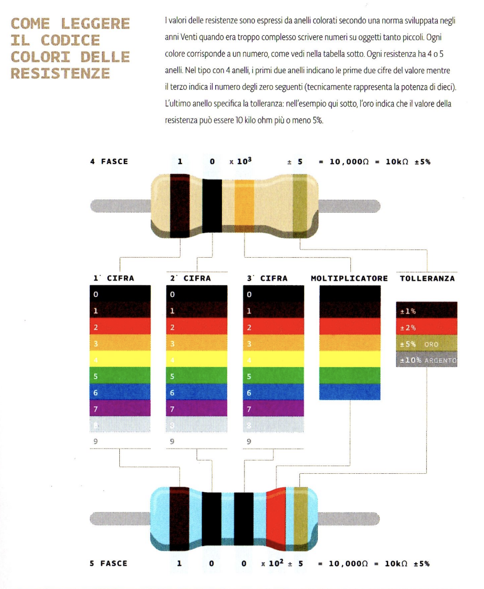
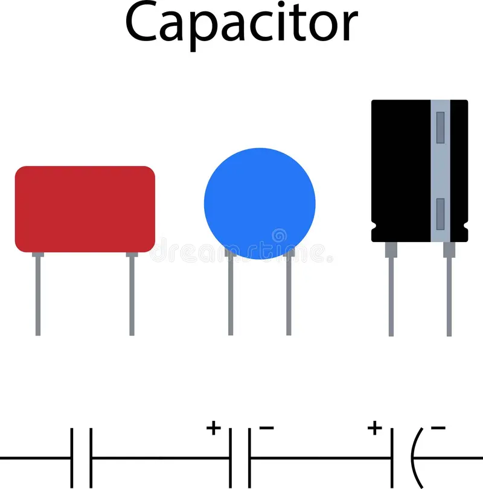
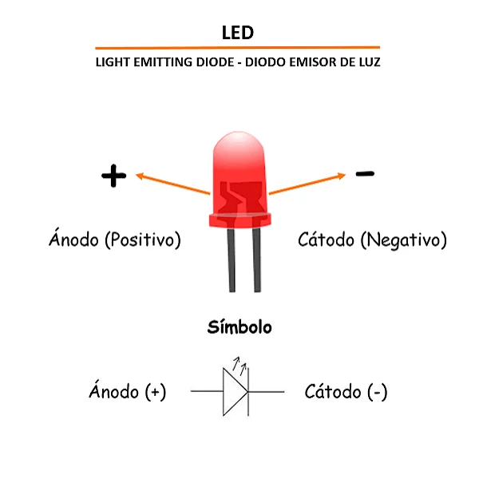
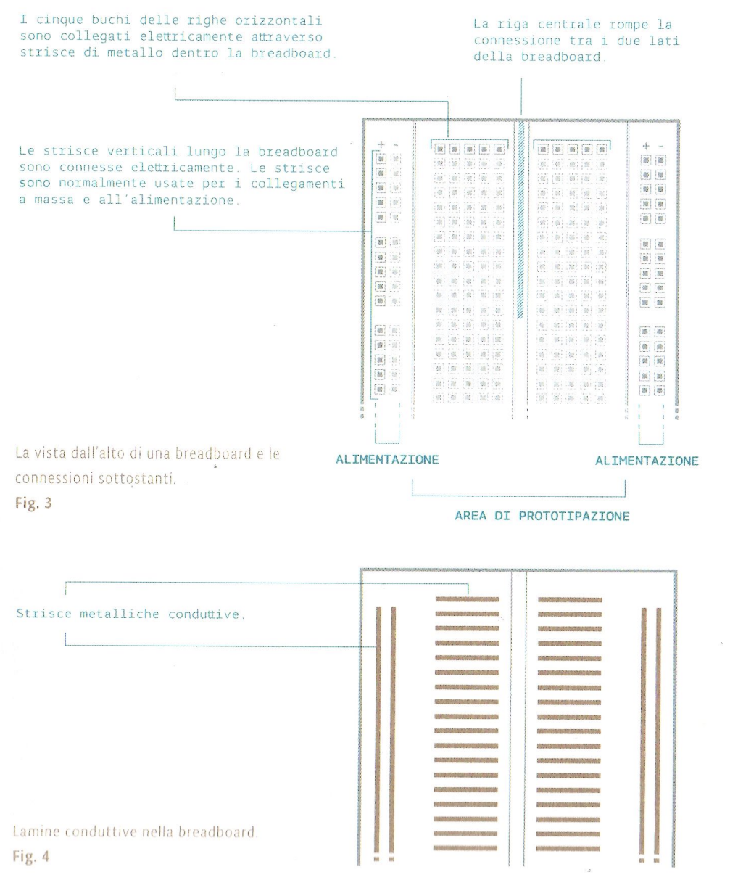
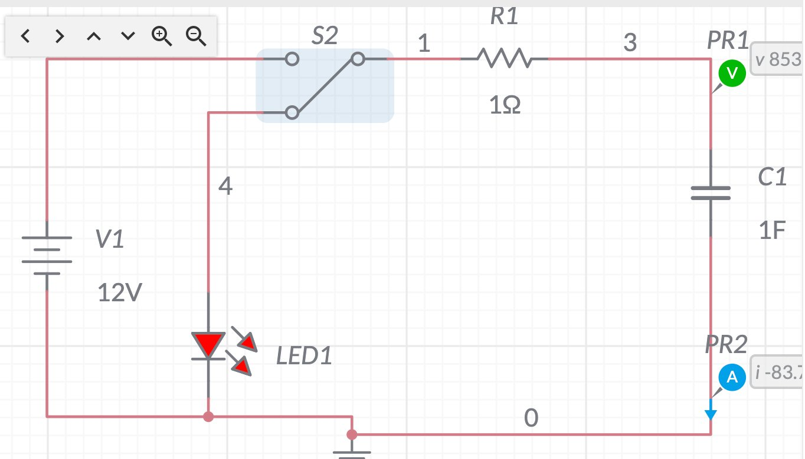
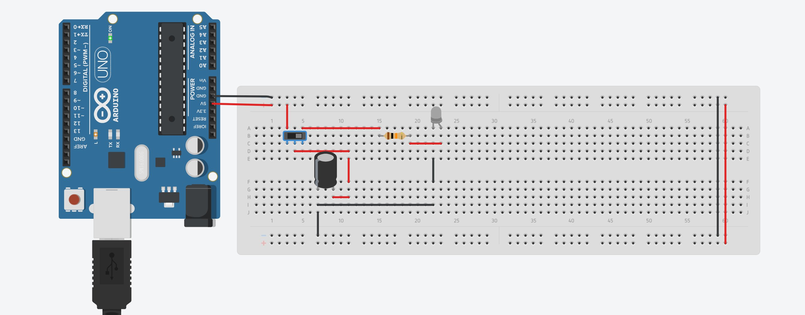

Scarica: in τ la carica scende al 36,8 % del valore iniziale.

La resistenza è un componente che si oppone al passaggio della corrente elettrica, dissipando parte dell'energia sotto forma di calore. Il suo valore, espresso in Ohm (Ω), non è scritto in cifre sul corpo del componente ma è codificato tramite anelli colorati.
Nelle resistenze a 4 fasce i primi due anelli indicano le cifre significative, il terzo il moltiplicatore (potenza di dieci), il quarto la tolleranza. Nelle resistenze a 5 fasce le cifre significative sono tre.

Il condensatore elettrolitico è un componente che immagazzina energia elettrica sotto forma di campo elettrico tra due armature separate da un sottile strato isolante. A differenza delle resistenze, è un componente polarizzato: possiede un terminale positivo e uno negativo, e la sua capacità si misura in Farad (F) o, più comunemente nei piccoli componenti, in microfarad (μF).
Il terminale negativo è riconoscibile da una banda chiara stampata sul corpo del componente (spesso con il simbolo "–"), ed è inoltre più corto rispetto al terminale positivo.

Un diodo è un componente che permette il passaggio di corrente in un solo verso (polarizzazione diretta) e lo blocca nel verso opposto (polarizzazione inversa). Il LED (Light Emitting Diode) è un diodo che, quando attraversato da corrente nel verso diretto, converte l'energia elettrica in luce grazie a un semiconduttore racchiuso in una cavità riflettente, protetto da una lente.
I due terminali del LED si distinguono per lunghezza: il piedino più lungo è l'anodo (+), quello più corto è il catodo (–). Spesso anche il bordo della lente presenta una piccola smussatura in corrispondenza del catodo.

La breadboard (basetta sperimentale) permette di assemblare circuiti senza saldature, grazie a connettori metallici nascosti sotto la plastica forata. Non tutti i fori sono collegati fra loro: bisogna conoscere lo schema delle connessioni interne per montare correttamente un circuito.
Nella zona centrale di prototipazione, i 5 fori di ogni riga verticale corta sono collegati elettricamente fra loro, ma sono isolati dalla riga adiacente. Una scanalatura centrale separa elettricamente i due lati della basetta. Le strisce laterali (contrassegnate + e –) sono invece collegate orizzontalmente lungo tutta la breadboard e si usano normalmente per portare l'alimentazione e la massa a tutto il circuito.
- Resistore fisso valore: ___ Ω
- Condensatore elettrolitico polarizzato C = ___ μF
- Diodo LED colore: ___
- Breadboard (basetta sperimentale)
- Cavi di collegamento
- Arduino sorgente 5 V in continua
- Multimetro digitale
- Cronometro
- Software Tinkercad simulazione preliminare
- Filamento di magnesio riferimento storico


-
1
Simulazione virtuale (TinkerCAD): Prima del montaggio fisico, riprodurre il circuito su TinkerCAD. Verificare la polarità del LED (anodo +, catodo –) e del condensatore elettrolitico (banda – sul terminale negativo). Osservare il comportamento atteso nella simulazione. Questo passaggio è stato svolto dal docente.
⚠ Non procedere al montaggio fisico senza aver simulato e verificato la correttezza dello schema. -
2
Identificazione dei componenti: Leggere il valore delle resistenze dal codice a colori. Verificare la capacità del condensatore (stampata sul corpo). Identificare anodo (+) e catodo (–) del LED dalla diversa lunghezza dei terminali.
-
3
Assemblaggio sulla breadboard: Inserire i componenti rispettando le connessioni interne della basetta. Collegare il terminale negativo del condensatore elettrolitico al ramo GND. Posizionare C e LED in parallelo tra il nodo A e GND.
-
4
Collegamento ad Arduino: Collegare il pin 5V di Arduino al ramo della resistenza R e GND al ramo negativo del circuito.
⚠ Corrente massima per pin Arduino: 40 mA. Verificare che I = V/R resti entro questo limite prima di alimentare. -
5
Verifica visiva: Prima di alimentare, controllare ogni connessione. Attenzione alla polarità di C e del LED. Un condensatore elettrolitico invertito può danneggiarsi irreversibilmente.
-
6
Prima accensione e misura: Alimentare il circuito (fase di carica: LED spento). Disconnettere l'alimentazione e misurare con il cronometro la durata del lampo del LED (fase di scarica).
-
7
Variazione di R: Sostituire la resistenza con un valore diverso. Ripetere la misura e confrontare la durata del lampo con la previsione τ = R × C.
2 Mg + O₂ → 2 MgO
Il lampo è però istantaneo, non controllabile e non ripetibile. Questa dimostrazione permette di confrontare direttamente la tecnologia chimica del passato con quella elettronica del circuito RC realizzato in laboratorio.
L'obiettivo è stato raggiunto: il circuito RC realizzato simula correttamente il funzionamento di un flash fotografico.
La variazione della resistenza di un ordine di grandezza ha prodotto una variazione equivalente del tempo di accensione, confermando sperimentalmente la relazione τ ∝ R.
L'esperienza ha reso concreta la connessione tra i principi dell'elettrotecnica (resistenza, capacità, costante di tempo) e un dispositivo di uso comune.